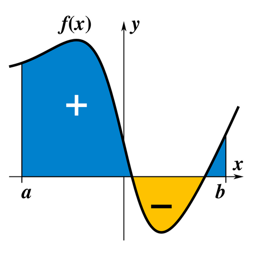
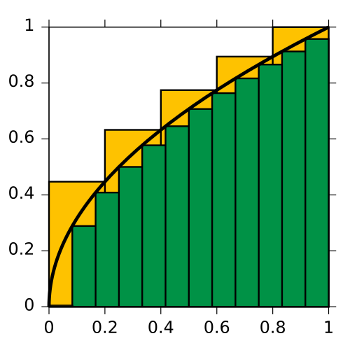

Práctica de Integrales por Sustitución
¿Qué es una integral?
Una integral es una generalización de la suma de infinitos sumandos, infinitesimalmente pequeños: una suma continua. La integral es la operación inversa al diferencial de una función.


Aplicaciones de las integrales
Las integrales tienen diversas aplicaciones en el área científica, principalmente en la Física para:
- Calcular ecuaciones de itinerario (Aceleración, velocidad y posición)
- Calcular centros de masa y momentos de inercia
- Calcular campos magnéticos (Ley de Gauss)
- Calcular la entropía de un proceso (Termodinámica)
Sustitución
La integración por sustitución es la “regla de la cadena” al revés. Si vemos un producto donde aparece una función interior y su derivada (salvo por una constante), podemos cambiar de variable.
Para empezar, busquemos la función interior \(u\) y escribamos su derivada \(du\). Si sobra una constante, la compensamos.
Ejercicio 1
Calcular la siguiente integral: \[\int 6x (x^2 + 2)^4 \, dx\]
Primero reconocemos la función interior, que en este caso es \(u = x^2 + 2\). Su derivada es \(du = 2x \, dx\).
Tenemos \(6x \, dx\) en la integral, pero nuestra derivada nos da \(2x \, dx\), por lo que sobra una constante que podemos compensar: \[6x \, dx = 3 \cdot 2x \, dx = 3 \, du\]
Reemplazando en la integral, tenemos que: \[\int 6x (x^2 + 2)^4 \, dx = 3 \int u^4 \, du\]
Integrando (ya que es una potencia): \[3 \int u^4 \, du = 3 \cdot \frac{u^5}{5} + C\]
Ahora reemplazamos \(u = x^2 + 2\) para volver a la variable original: \[\frac{3}{5} (x^2 + 2)^5 + C\]
Podemos verificar que el resultado es correcto derivando: \[\frac{d}{dx} \left[ \frac{3}{5} (x^2 + 2)^5 \right] = \frac{3}{5} \cdot 5 (x^2 + 2)^4 \cdot 2x = 6x (x^2 + 2)^4\]
Efectivamente recuperamos el integrando original.
Ejercicio 2
Calcular la siguiente integral: \[\int \frac{3x^2}{x^3 - 1} \, dx\]
Aquí la función interior es \(u = x^3 - 1\), y su derivada es \(du = 3x^2 \, dx\).
En este caso la derivada aparece exactamente en el numerador, por lo que no necesitamos compensar nada: \[\int \frac{3x^2}{x^3 - 1} \, dx = \int \frac{du}{u}\]
Este es el patrón logarítmico, cuya integral ya conocemos: \[\int \frac{du}{u} = \ln |u| + C\]
Reemplazando \(u = x^3 - 1\): \[\ln |x^3 - 1| + C\]
Ejercicio 3
Calcular la siguiente integral: \[\int \frac{e^{2x}}{1 + e^{2x}} \, dx\]
Vemos que la derivada del denominador \(1 + e^{2x}\) es \(2e^{2x}\), que aparece en el numerador salvo por el 2. Tomamos \(u = 1 + e^{2x}\) y \(du = 2e^{2x} \, dx\).
Compensando la constante: \[e^{2x} \, dx = \frac{1}{2} \, du\]
Reemplazando en la integral: \[\int \frac{e^{2x}}{1 + e^{2x}} \, dx = \frac{1}{2} \int \frac{du}{u} = \frac{1}{2} \ln |u| + C\]
Volviendo a la variable original: \[\frac{1}{2} \ln |1 + e^{2x}| + C\]
Ejercicio 4
Calcular la siguiente integral: \[\int \frac{x^3}{x^2 + 1} \, dx\]
En este ejercicio la sustitución no aparece de inmediato, pero podemos reescribir el numerador. Notemos que \(x^3 = x \cdot x^2\), y como \(x^2 = (x^2 + 1) - 1\), podemos escribir: \[x^3 \, dx = x (x^2 + 1 - 1) \, dx\]
Ahora sí, tomamos \(u = x^2 + 1\) y \(du = 2x \, dx\), por lo que \(x \, dx = \frac{1}{2} du\).
Reemplazando en la integral, tenemos que: \[\int \frac{x^3}{x^2 + 1} \, dx = \frac{1}{2} \int \frac{u - 1}{u} \, du\]
Separando la fracción: \[\frac{1}{2} \int \left( 1 - \frac{1}{u} \right) du\]
Integrando término a término: \[\frac{1}{2} (u - \ln |u|) + C\]
Reemplazando \(u = x^2 + 1\): \[\frac{x^2 + 1}{2} - \frac{1}{2} \ln (x^2 + 1) + C\]
Que también podemos escribir como: \[\frac{x^2}{2} - \frac{1}{2} \ln (x^2 + 1) + C\]
ya que la constante \(\frac{1}{2}\) se puede absorber en \(C\).
Ejercicio 5
Calcular la siguiente integral: \[\int \frac{1}{x(1 + \ln x)} \, dx\]
Aquí la función interior está anidada, notemos que \(u = 1 + \ln x\) y su derivada es \(du = \frac{1}{x} \, dx\).
En este caso la derivada aparece exactamente en el integrando (el \(\frac{1}{x}\) que multiplica), por lo que: \[\int \frac{1}{x(1 + \ln x)} \, dx = \int \frac{du}{u}\]
Nuevamente tenemos el patrón logarítmico: \[\int \frac{du}{u} = \ln |u| + C\]
Reemplazando \(u = 1 + \ln x\): \[\ln |1 + \ln x| + C\]
Ejercicio 6
Calcular la siguiente integral: \[\int \frac{2x}{(x^2 + 4)^3} \, dx\]
Tomamos \(u = x^2 + 4\) y \(du = 2x \, dx\). La derivada aparece exacta en el numerador, por lo que podemos escribir la integral como una potencia: \[\int \frac{2x}{(x^2 + 4)^3} \, dx = \int u^{-3} \, du\]
Integrando la potencia: \[\int u^{-3} \, du = \frac{u^{-2}}{-2} + C = -\frac{1}{2u^2} + C\]
Reemplazando \(u = x^2 + 4\): \[-\frac{1}{2(x^2 + 4)^2} + C\]
Ejercicio 7
Calcular la siguiente integral: \[\int \frac{\arctan x}{1 + x^2} \, dx\]
Sabemos que la derivada de \(\arctan x\) es \(\frac{1}{1 + x^2}\), por lo que tomamos \(u = \arctan x\) y \(du = \frac{1}{1 + x^2} \, dx\).
La derivada aparece exactamente en el integrando, por lo que: \[\int \frac{\arctan x}{1 + x^2} \, dx = \int u \, du\]
Integrando: \[\int u \, du = \frac{u^2}{2} + C\]
Reemplazando \(u = \arctan x\): \[\frac{1}{2} (\arctan x)^2 + C\]
Ejercicio 8
Calcular la siguiente integral: \[\int \frac{\ln x}{x} \, dx\]
Tomamos \(u = \ln x\) y \(du = \frac{1}{x} \, dx\). La derivada aparece exacta en el integrando: \[\int \frac{\ln x}{x} \, dx = \int u \, du\]
Integrando: \[\int u \, du = \frac{u^2}{2} + C\]
Reemplazando \(u = \ln x\): \[\frac{1}{2} (\ln x)^2 + C\]
Ejercicio 9
Calcular la siguiente integral: \[\int \frac{1}{\sqrt{x} (1 + \sqrt{x})} \, dx\]
Aquí conviene tomar \(u = 1 + \sqrt{x}\), cuya derivada es \(du = \frac{1}{2\sqrt{x}} \, dx\).
Compensando la constante: \[\frac{1}{\sqrt{x}} \, dx = 2 \, du\]
Reemplazando en la integral: \[\int \frac{1}{\sqrt{x} (1 + \sqrt{x})} \, dx = 2 \int \frac{du}{u}\]
Integrando y volviendo a la variable original: \[2 \ln |u| + C = 2 \ln |1 + \sqrt{x}| + C\]
Ejercicio 10
Calcular la siguiente integral: \[\int \tan x \, dx\]
Recordemos que \(\tan x = \frac{\sin x}{\cos x}\), por lo que podemos escribir la integral como: \[\int \tan x \, dx = \int \frac{\sin x}{\cos x} \, dx\]
Tomamos \(u = \cos x\) y \(du = -\sin x \, dx\), por lo que \(\sin x \, dx = -du\).
Reemplazando: \[\int \frac{\sin x}{\cos x} \, dx = -\int \frac{du}{u}\]
Integrando y volviendo a la variable original: \[-\ln |u| + C = -\ln |\cos x| + C\]